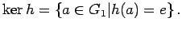

Inhalt Index DeskTop Bronstein

 Algebra und Diskrete Mathematik Klassische algebraische Strukturen Gruppen Abbildungen zwischen Gruppen
Algebra und Diskrete Mathematik Klassische algebraische Strukturen Gruppen Abbildungen zwischen Gruppen


Die Menge der Nebenklassen eines Normalteilers N in einer Gruppe G wird bezüglich der Operation
| (5.104) |
zu einer Gruppe, der Faktorgruppe von G nach N, die mit G/N bezeichnet wird.
Der folgende Satz beschreibt einen Zusammenhang zwischen homomorphen Bildern und Faktorgruppen einer Gruppe und wird deshalb Homomorphiesatz für Gruppen genannt:
Ein Gruppenhomomorphismus bestimmt einen Normalteiler von G1, nämlich  Die Faktorgruppe ist isomorph zum homomorphen Bild . Umgekehrt bestimmt jeder Normalteiler N von G1 eine homomorphe Abbildung mit natN (a) = aN. Diese Abbildung natN wird natürlicher Homomorphismus genannt.
| Beispiel |
|
Weil die Determinantenbildung ein Gruppenhomomorphismus mit dem Kern SL(n) ist, bildet SL(n) einen Normalteiler von |